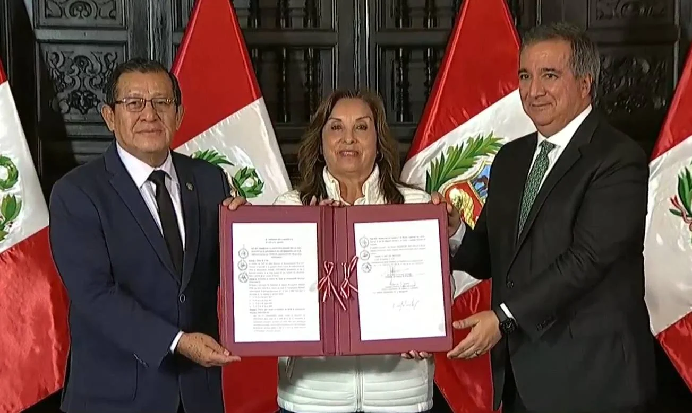

Noticia
16 junio, 2025

REMURPE logra la promulgación de la ley que incrementa el FONCOMÚN hasta 4%, fortaleciendo la descentralización fiscal. La norma fue firmada por la presidenta Dina Boluarte con respaldo del Congreso y el MEF.
En una ceremonia oficial realizada en Palacio de Gobierno, la presidenta de la República, Dina Boluarte, promulgó la Ley que fortalece el Fondo de Compensación Municipal (FONCOMÚN), norma que permitirá descentralizar mayores recursos hacia los gobiernos locales, con el objetivo de impulsar obras públicas y cerrar brechas en las zonas más alejadas del país.
En el acto también participaron el presidente del Congreso de la República, Eduardo Salhuana Cavides, elegido para el periodo legislativo 2024–2025, y el ministro de Economía y Finanzas, Raúl Pérez Reyes Espejo. La presencia de estas altas autoridades evidencia el respaldo institucional de los principales poderes del Estado a esta reforma estructural en favor del desarrollo territorial.
La Red de Municipalidades Urbanas y Rurales del Perú (REMURPE) celebra la promulgación de esta ley como un hito que representa la concreción de una demanda histórica de los gobiernos locales y la culminación de un proceso de movilización e incidencia liderado por REMURPE en favor de la descentralización fiscal.
Este logro es el resultado de una lucha sostenida desde 2023, cuando más de 600 alcaldes se reunieron en Quispicanchi, Cusco, exigiendo una mayor equidad en la distribución de los recursos públicos. A partir de entonces, se impulsaron jornadas de incidencia, marchas pacíficas y audiencias descentralizadas en distintas regiones, entre ellas la Comisión de Economía del Congreso realizada en la ciudad de Huancayo. Gracias a esta presión articulada y sostenida, se logró la promulgación de una norma que incrementa progresivamente los recursos del FONCOMÚN hasta alcanzar el 4% en el año 2029.
El Fondo de Compensación Municipal (FONCOMÚN) es un fondo establecido en la Constitución Política del Perú, orientado a promover la inversión pública con un enfoque redistributivo, priorizando a las municipalidades de zonas rurales, urbano-marginales y regiones más alejadas del país. Su fortalecimiento significa mayor capacidad para ejecutar obras, atender las brechas territoriales y responder a las necesidades reales de nuestras comunidades.
Desde REMURPE, reafirmamos nuestro compromiso de seguir impulsando reformas que garanticen una descentralización efectiva, con justicia fiscal y autonomía territorial. Los gobiernos locales del Perú se mantendrán vigilantes para asegurar la implementación efectiva de esta ley y su traducción en mejores condiciones de vida para la población.